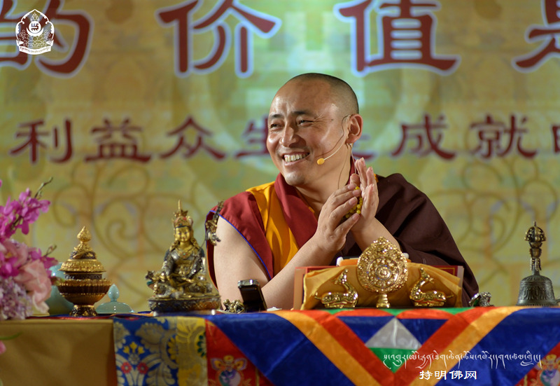

2015年第三届持明文化(北京)佛学讲座
主题:生命的价值是奉献—放下自我，利益众生，是成就的最高境界。
大家好！今天我会给你们简单讲一些佛学的知识。

我们先念一段经文。一定要记住，咱们今天聚集一个下午的时间，就那么几个小时，希望大家专心地念、专心地听。大家想想，抽出来这个时间，对你们而言也是很宝贵的，今天这里所有的工作人员，主办、支持这个法会的所有弟子们，做了相当大的工作，相当有风险。你们在座参加的人，应该说很轻松地就能来到这样一个可以积福德的环境，希望你们专心地念一段经文。然后专心地听一下我讲的简单的佛教知识，对你们一定能带来帮助，一定能带来一定的福分。希望大家专心一下，不要想很多其它的事情。
大家都有工作，还要忙很多家庭琐事，每天从早到晚一直想的都是这些。今天好不容易找出一个时间，内心净化一下，所以自心要能够静下来，积个福德，对人生观重新有个认识，这是相当难得的机缘。希望大家专心一下念诵。越专心、越具足敬心，就越容易产生对佛法的信心，对自他的善心、爱心也能够更有动力、更有帮助。做任何事情，专心去做和不专心去做有很大的差距。第一步希望大家今天专心地参加这个活动，我们念一段经文，然后我再给你们讲一些佛教的知识。
（念诵前行仪轨……）
刚才念诵的经文，这个叫前行，就是一个好的开始，祝福大家能够吉祥顺利、积累福报的意思。
今天我们会讲一些佛教的相关内容，大家也都有这样一个发心，来参加这个活动。所以我大概给你们讲一点点简单的佛教知识。
首先，从信仰的角度，今天这里很多人是皈依佛门、学佛的人，也有很多人还没有皈依，刚刚信一点佛，就是这么一个状态。但是，不管你信佛也好、不信佛也好，这个暂时不是最重要的，最重要的是，对于一个人是否拥有一颗善良的心，有一个很好的思想，有一个很好的人生目标，这个才是最关键的。有情众生追求的都是让自己越来越开心、越来越幸福，但是怎样去实现人生更完美，这个得需要有一定高尚的见解。这样我们才能获得理想的结果。不然的话，以我们现在所追求的方向、目标，以及现有的状态，幸福人生是相当有难度的。现代社会的实际情况是，虽然物质条件、生活条件越来越丰富，但是人们并没有感觉到轻松，并没有得到越来越多的幸福感；或者对自己的人生有了更好的梦想、更好的追求，并没有的。为什么没有呢？这就是精神生活同样需要丰富，需要有释迦牟尼佛所讲的人生哲学、生活目标，以及怎样成为一个真正善良的人，怎么做一个真正对社会、对众生同体大悲的人。这样的人生才会有意义、不迷茫。如果不是这样的话，而仅仅为了眼前一点利益，荒废了人生，那肯定不会实现最好的结果。所以希望今天在座的人、在听的人，对自己的人生要有一个很好的规划、很好的方向，这是很关键的。
可能很多人想，“我的人生很有方向，我有一点儿的权力、一点儿的财富，我想追求的东西都得到了，这就是我的人生观，这就是我的人生目标。”大多数人都是这样的一种心态。但是大家错了，不是这样子的。对于大家的人生，从哪里来到哪里去，对自己的这一生当中做一些什么有意义的事情，不该做什么，该做什么，能有一个很好的规律、很好的约束的话，对每个人都是有好处的，这个是没有坏处的。释迦牟尼佛所告诉大家的道理，让我们做一个好人，做一个善良的人。这个也算是佛教的一部分。当然不光是佛教，其他的各种宗教也有讲述这样子的方法，但是佛教的这种慈悲观绝对有很大的差别。希望大家对佛法重新有一个认识，对自己的人生观重新有一个认识。这是很关键的。
我这里大概先讲讲汉传佛教与藏传佛教有哪些区别呢？其实本质上是没有任何区别的。也许有人说藏传佛教是一种，汉传佛教是一种，南传佛教是一种，很多人有这样的疑问，要么就是都不清楚。实际上所有的佛教徒都是释迦牟尼佛的弟子，所有的佛法都是让我们行善，让我们要诸恶莫作，众善奉行，佛教的理论，佛教的目标就是这个意思。所以，这里很多人也许想藏传佛教的内容和汉传佛教有一点差别。是有一点差别，汉传佛教先有显宗，然后有禅宗，有这样一层一层的差别。在藏传佛教也有显宗，然后有密宗，然后再有金刚乘，就是这样一个顺序。当然显宗一部分的内容就是让我们断恶向善，让我们能够变得越来越慈悲，越来越有智慧，对自己的人生有更好的目标，我们一开始的时候有这样的一种发心。最后慢慢进入到利益众生，能够有这样的发心。
佛法传承至今已经有两千五百多年的历史，今天这个时代上，能够越研究越精彩，通过研究大家认识到佛法高深的内容，如果佛法对人类没有做贡献，他是没有价值的东西。他没有更深的道理的话，人们是不会相信的。这个时代的人可以说越来越聪明，越来越有智慧，理解能力越来越强，但是这个时候反而佛教越来越兴盛，越来越多的年轻人能够参与。这也是因为这个时代通过网络，通过各种各样的书，有很多方便法以及学习佛法的方式。在以前的话，信佛，修密宗是很高层次的人，要么就有一定时间的人，有一定福分的人才有可能接触到。今天，可以说是所有人只要想学，佛教理论都可以学到，什么内容都可以研究的，这是我们这个时代的一个福报显现。有这么好的智慧，又可以最快的速度学习理解，但是呢，现在的人对自己内心世界考虑得很少的，外在的世界大家追求的相当多，外在世界的研究，你们学到的东西，从小到现在，学各种各样的天文历算等等世界观，以及万事万物的道理，其实你们也学了不少了。但是，你们却没有探索内心世界。要知道，我们的心灵需要净化，我们的内心修养如果没有提高的话，外在方面有再多的智慧，再怎么理解外在的变化无常，也对我们生活当中起不了什么作用。所以，我们需要的是什么呢？需要的是——我们的内心世界能够提高。我们内心世界要更好的改变，那我们的人生才会变得特别有意义。希望大家这方面要有一定的学习。
这个世界上，所有的生命都不想有痛苦，不想有烦恼，不想有更多不想遇到的事情。但是这个世界上很多众生，不知道怎么去找到幸福，也不知道自己怎么能得到快乐。什么原因呢？这就是我们种什么因，就有什么样的果报。我们今天大多数的状态是，让我自己高兴就可以了，不顾及别人的感受，这种状态是很严重的。我自己高兴就行，而对别人有多大的痛苦，包括对畜生道的杀生，还有世界上很多违背伦理道德的行为，全然不顾。
我们这个社会上有很多问题，都是因为人们没有很好地学习文化，要么没有学习慈悲观，没有学习因果规律学说的结果。如果懂得了因果规律，你们肯定不会有这么多的无明，这么多的痛苦。大家如果想要越来越幸福、长寿健康、平平安安的话，首先要记住！要种一个善的果报。什么果报呢？因为今天我的智慧、我的财富，能够做布施，能够用来帮助别人，能够让别人高兴的话，这种因种下来一定是快乐的因、幸福的果。如果因为我有今天的权力、财富而令众生得到痛苦的话，这种恶因种下来得到结果一定是痛苦的，所以一定是需要知道这个道理的。
很多人想，我看不到轮回，也看不到因果规律。当然这个世界上你们经常看到很多人违背因果，经常看到很多人做一些很大的恶业，能够有现世报，马上出现因果的状态是相当多，因果规律发生作用得到果报的人还是相当多的。也许开始的时候我们没有感觉，但是有没有因果学说、有没有善有善报恶有恶报？有没有这个道理呢？这个道理是不是说说而已呢？能不能真的实现这个因果呢？在历史上，或者这个时代上，很多人所做的一些违背因果各种各样的罪过，带来的结果有没有幸福呢？有没有让他们得到快乐呢？没有吧！大多数人都看到了吧！为什么要受持因果呢？受持因果学说，我们就没有那么强烈的欲望，欲望如果减少，生活就会变得很有质量、很有目标。如果欲望强烈，再加上愚昧，人生就会多走弯路，这就是因为没有智慧、欲望强大。
虽然今天我们拥有的物质已经相当丰富，这个时代的人，过着跟天人一样的生活，但是大家有没有感觉到拥有的东西给你带来相当的幸福感呢？没有吧！你喜欢的东西，你追求的东西，它会不断地变化的，今天是一个样，明天是另一个样，这个世界每天都在变化。这朵花，或者这个世界，所有的事情是它自己变化了吗？不是的，是我们的心的变化。我们的心在随时随地的变化当中。很多人没有太多的权力和财富，也许过得很有幸福感。也许当你得到一点点权力和财富，有了一点点名声以后，过得越来越辛苦，越来越累，并没有找到幸福。什么原因呢？因为今天所有人追求的东西都是有漏的。佛法里面讲了，外在物质世界是有漏的，它不是固定的，它永远在不断变化当中。那怎样才能找到永恒的幸福呢？我们要学习佛法才可以找得到。
我们一定要知道，因果学说不是释迦牟尼佛创造的，释迦牟尼佛没有成佛以前就有轮回，有因果学说。其它一些外道、其它一些宗派，说这个世界是有人创造的，人的喜怒哀乐也是有人创造的，轮回、生老病死也是有人创造的，这个是不对的。世界是有因有果产生的，今天世界上的所有东西，都是有原因产生的结果，这就是佛教里讲的缘起性空。缘起，有原因产生的结果。今天我们拥有的身体健康、财富、智慧，都是有原因得来的。不是所有人都有这样的福分的，不是所有人都能相信佛的，也不是所有人都能研究内心的世界。大多数都根本没有机会学佛，大多数连自己的温饱都是问题，根本没有时间研究内心的世界。今天在座的人基本只要自己知足的话，你们拥有的一切应该是很多的，应该是不缺的。但是这个基础上，我们最缺的是什么东西呢？最缺的是内心的世界，最缺的是我们的信仰，最缺精神世界，最缺的是更高的见解，更好的人生追求。
我们所有人今天来到这个世界上，大家想想嘛，除了今天所做的工作，所得到的一切以外，你们还有没有其他的想法？有没有人可以做很大的善，也可以做很大的恶业？一个人善良的大悲心可以让一片人得到幸福，同样一个人的业力可以给一片人带来痛苦的因。这是谁创造的呢？这是我们的内心世界创造的，而不是任何人创造的，这是跟我们自己的心有关系的。今天我的喜怒哀乐，我的幸福感、满足感，我对人生有一个更好的理想，要么更好的追求，也是我们的心有关系的，而不是外在的东西。外在基本需求的家庭、工作、事业，这是我们基本需求的东西，这个不能没有，没有的话那就是有很多痛苦的。但是除了这个以外，如果再没有什么太多的追求的话，那么人就跟动物没有任何区别了。动物也有自己的世界，它也会照顾自己，它也会有办法自己生活的，它有自己的世界观。而我们有我们的世界观，我们应该是更智慧的人，有福分的人，有一点点福报的人。但是福分如果没有利用好，我们今天拥有的最美好的时间，最美好的身体、自己的状态，一切一切最美好的事物，如果没有修行佛法，没有求解脱，没有研究一些高尚的人生观、高深的智慧，时间很快就会过去的。当我们遇到了痛苦，再想解决问题这个时候是很难的。所以，提前我发现了有轮回，发现了善有善报恶有恶报，发现了不能造恶业，发现了一定要做善，如果有这样一个目标的话，大家想想嘛，这是不是一个很好的开始呢！
所有人都想行善，所有人都说我很善良，我没有做过什么恶业。大家想想嘛，这是不是真正标准的善良？有没有真正善良的标准？通过研究佛法的道理，才能发现很多我不完美的地方，发现自己以前的想法很低，没有太高的目标。眼前所谓的爱心，所谓的帮助别人，所谓的很有善心，也许都是有局限的，也许就是对你家人好一点，对朋友好一点，最多对某一个动物有一点爱心以外，对所有的生命有平等的慈悲观肯定是没有的。这就是我们修行大乘佛法的精髓，有这样子的训练，我们的内心才能找到真正大悲的感觉。我们的心跟运动员的训练是一样的，运动员通过训练可以完成各种各样的动作，各种普通人做不到的运动，我们的内心世界也是一样的，这个世界上有很多高僧大德的内心世界真的是普通人是感受不了的。佛经里讲的很多高深的内容，即使一句话在生活中用起来，你理解的话，一定会给你带来很大的改变。
大家想想，释迦牟尼佛是两千多年前的人，流传至今有这么多的佛经，大藏经、时轮金刚等等很多经文，这是一个普通人能写的出来的吗？连一部经文我们都研究不了的，大家想想嘛，这是一个普通人吗？他超越了人类的智慧，他看到了这个世界一切的真相。我们就是看不到未来，只看到眼前，眼前所得到的一切感受，最多就是这样子。再不就是我有点理想，为了我工作好一点，为了我有一个好的家庭，为了我有一个更好的房子、更好的汽车，类似这样的梦想以外，其它的人生观很多人是没有的。追求世间八法不是一点不可以，但佛教讲要知足少欲，就是不要将你所有的生命都给予物质世界，那就是很不值当的。我们应该对自己的人生负责，那才是有价值的。世间琐事再成功、再有权力，一切也都变化无常。当我们生死轮回那一天，再大的世间利益也跟我们一点关系没有了。什么事情和我们有关系呢？有关系的是善、恶。今天我所做的善业、恶业，陪伴我们的意识，这是永远跟我们走的。现在你所拥有的美丽、智慧、权力、财富，一定是前世种了巨大的福分才获得的。你们千万不要想，这是我努力来的，这是我自然而然就得来的，千万不要这样想。这种想法当今时代很严重的，就是因为道德退步，人没有感恩回报的心，人越来越自私自利，尤其是因为不懂因果学说，不研究轮回的过程，所以会出现这类问题。
当然，你信佛以后专心去修行的话，内心的世界肯定会越来越清净，越来越平静。我们每个人需要追求的是什么呢？追求的是我越来越开心，越来越快乐。有很多种方式我们可以得到快乐，很多种方式今生可以获得永恒的幸福，而不是这些外在的。天天所做的事情是一模一样的，这个事情一直不断地去做，当哪一天你做完这一切的时候，你的身体根本已经没有太多的精力了。我们会发现我的时间已经浪费了很多，我最美好的时代已经过去了，这个时候我想做个慈善，想修行佛法，这个是做不了的。甚至这个时候一辈子所做的一切都跟我一点关系都没有了，我做不了主了，已经别人做主了。这就是很多人的人生最后的悲剧。所以我们一定要趁现在自己有能力，自己有权力，自己能做主的时候，赶紧做善做功德去。我们没有能力自己做主的那一天，我会很遗憾，这个时候我想做善是来不及的，这个时候是没有机会修行的。这就是人生观，这就是佛教讲的人要认识自己生命的归宿。
未来发生的一切一切，我们每个人一点也不知道。为什么不知道？我们没有智慧，没有研究。但是释迦牟尼佛知道这个因果的规律，因果可以改变的，人生命运可以改变的。人可以变菩萨；人可以成为佛。人也可以造恶业堕入恶趣，畜生道、饿鬼道、地狱道。这一切是谁说了算呢？不是这个世界说了算，也不是你的家人说了算，是你自己的内心说了算。所以希望大家一定专心研究一下，自己的生命有没有归宿，一辈子就这样过去的话，结束的时候一切跟自己有没有关系，现在不能不研究啊。
佛教讲了人身难得、寿命无常、因果不虚、轮回过患，这个就叫四个前行。今天我们看到所有人都有美好的愿望，美好的想法，但是我们看到这个世界上每天都有无常的显现，这就是不断地提醒我们，一切一切都是变化无常的，你不要那么当真。你所看到的一切执着的东西，它一瞬间就跟我们没有关系了，这就叫无常。大家经常看到突然遭遇一些意外的人，这里面有年轻的、有智慧的、有福报的、有权力的、有很小的、重新开始人生的目标的，而在示现无常的那一刻什么办法也没有了。所以我们应该是提早就发现应该有因果规律，应该要做善，不能造恶业。如果我们有这样的约束和控制，对大家绝对是没有坏处的，对你的工作、家庭，包括整个社会都是有好处的。你如果相信因果，你就是有道德的人，所有人都会喜欢接触这样的人的。对于很正直的人、习气少的人、不打妄语的人，大家都希望接触这样子的人，因为这样接触起来心里很轻松，不用那么累。但是在这个世界上大家是不是这个状态呢？在生活当中，大家恐怕不是这样子的吧。我们现在没办法改变所有人，但我从自己做起，我改变的话我的家人会改变，周围的同事、好朋友也能感受到你的改变，也能感受到学佛的好处。你用这样的方法来使人相信佛法、弘扬佛法就是很好的。佛教中有很多高深的道理，但是对大家来说这些是没有太大关系的。对我们来说有关系的是什么呢？是我们今天的生活变得特别有质量，对自己的人生能够找到一个更好的目标。这是不是很关键呢？大家都会这么想的。包括动物也是这么想的。但是对于动物来说就根本没有办法实现，他们连自己的生命都没有办法保护。而我们除了今天能看到追求的东西以外，我们是不是还可以追求很多的东西，如果不追求的话会不会有很遗憾的那一天呢？希望大家一定要思考一下。
我们今天拥有的一切都是相当来之不易的。今天我们的工作、家庭，从小读书到今天，这一切都是相当不容易的。是因为周围很多人的帮助、还有父母为我们造了相当大的恶业才能得来的。但是千万不要忘记，今天这一切最不容易最难得的东西，会很容易失去的。很容易在一瞬间，这一切所做的事情就变得一点也没有价值。所以我们一定要考虑未来。未来跟我们是大有关系的。很多人会想，今天我所做的事情就是今天，明天所做的就是明天。其实根本不是这样的。今天你所做的一切而种下的因，明天会得到结果。今天你给予别人快乐幸福的因，明天会给我们带来快乐幸福的果。如果今天我倚仗权力和能力伤害了无数的生命，让很多众生遭受痛苦的话，那明天得到的一定是痛苦的结果。这个道理你们不能不想的。明天才是更重要的，今天再难的事情都有办法解决。你们想一想，是不是生活当中有很多事情都是可以解决的？而生老病死是谁也没有办法解决的，到轮回的那一天是谁也救不了的。任凭你今天有多少权力财富，有多少的眷属，所有这一切都帮不了你的。谁才能帮你呢？佛法僧三宝。你做的善业，可以改变这一切。那是不是我们应该考虑一下自己的未来。大家想想，从小到大我们花了这么多的时间和精力，学了这么多的知识、做了这么多的事情，全部都是为的什么呢？为了我们自己好嘛！为了我们自己开心，有一个更美好、更幸福的一天。但是如果你不懂得利用今天拥有的智慧、财富的话，你靠今天得到的这一切东西就会造很大的恶业，你会毁掉你的人生。为什么呢？就是因为我有巨大的欲望。我就是不断的去追求、攀比、虚荣，自己的人生在迷茫中度过。有很多人，财富很多权力很大，自己拥有好几辈子都用不完的钱，但就是因为欲望太强烈了，还不断的去追求不断的去攀比，最后示现了无常，一下子什么都没有了。
我们生活当中要有一个很好的心态，知足少欲，知足常乐，这是汉地大家很常见的一种说法，如果我们今天有知足感满足感的话，是不是已经很好了？但是如果没有很好的智慧去训练自己的内心世界的话，这些想法是不可能自己产生的。刚刚说过了，慈悲心也是可以训练出来的。而我们能够满足于自己今天追求的东西、拥有的东西，这些也是需要训练的。如果我用心去研究的话，就会发现，我的人生是很有价值的，我的生命是很有价值的，我不能浪费。不能浪费时间，不能浪费今天拥有的一切。我的时间就是我的生命，生命对我来说，这个世界上没有比它更宝贵的了。但是一年一年时间就这么过去了，这一年当中也没有做一个善，没有做一个功德，没有修行佛法，那大家想想看是不是很遗憾呢？我们的生命是越活越长还是越来越减少呢，大家都很清楚的。那越来越减少的话，最后会发生什么呢？最后发生的是和我这一辈子所做的事情有关系的。所以对自己的人生我们不能不考虑，自己今天所拥有的时间、生命、一切美好的东西，如果利用不好的话就会毁掉自己的人生。
今天很多人已经达到了相当高的生活水平，但是越来越感觉到活着没有劲，越来越感觉到人生没意思，然后很多人就选择自杀。现在自杀的人越来越多，得抑郁症的人越来越多。这是什么原因呢？就是欲望太强了。不是没有拥有的东西，而是我的内心没有东西了，精神的粮食太少了。所以我们需要的是外在和内在一起进步，才能可以找到人生最好的结果。如果我们不研究的话，那最后就会导致这样的结果，人和人之间的距离感越来越大，对于这一切拥有的都没有感觉了，这是什么原因呢？本来是很有价值的，本来是很有意义的，但是你不懂得珍惜，不懂得这些高深的道理的话，我们的内心世界就会退步，就会出现这种问题。前几年我听其他上师开示说，十几岁的小孩就有得抑郁症的，还有七八十岁的老人自杀的，你们想想多么可怕呀，这是什么原因呢？这就是没有信仰的关系。在藏地是全民信佛的，一个得抑郁症的都没有，也不会有选择自杀的类似这样的事情。生活比你们简单多了，没有这么多的物质，也没有这么多的高楼大厦，但是人们因为有信仰，所以相当幸福的。人们每天追求的是内心的世界，特别是年龄大的人。而在汉地，年龄大的人就更可怕了，没有信仰不学佛的人天天就是不开心，天天都觉得我吃的不好住的不好，天天有很多不开心的事情。本来没有任何不开心的事情，自己却找来很多不开心的事。
我们人生当中有很多的痛苦。很多人觉得根本就没有痛苦，我怎么痛苦啊我今天很好啊！我不想信佛，我也不想成菩萨，我也不想去皈依佛门。佛经里面讲，人生有“苦苦、行苦、变苦”。
“苦苦”是什么意思呢？我们今天所做的所有这些因就是痛苦的因，要么就是解脱的因、永恒幸福的的因，只能是这两种。大家想一想，从小到大父母为我们杀了很多的生，我天天都因为贪心、嗔心、傲慢造了很多不好的恶业，这些都是痛苦的因。而“苦苦”的意思就是痛苦上面再加上痛苦。有些人遇到一件不顺的事情，比如生病了，结果家里人又出现痛苦的事情。一下子变得特别的不顺利，一下子遇到很多很多的痛苦，这就是叫“苦苦”。人生当中有很多我们根本做主不了的事情，随时随地会发生，这个就叫“苦苦”。
“变苦”是什么意思呢？刚才说了有人说“我不想信佛，我今天很幸福，我今天生活也好，家庭也好，一切一切都很好，我就是自己做一个好人就行了，最多下一世当个人就可以了。”这个是需要有标准的，想当人就得好好学习一下，怎么样下一世才能当得了人呢？光我想当人就能当人吗？这个不是的。这个世界上有很多事情是你想做就能做的吗？比方说，想当很高的高官，很有权力的，很有财富的，你想当就当得了吗？大家想想，当不了吧！那轮回我们更说了不算的，现实生活当中有很多的问题，我们都说了不算，那轮回中的很多问题，我们是根本说了不算的。谁说了算呢？善、恶说了算。所以我们需要考虑一下。今天我拥有的一切都是因缘和合。所有的东西都需要因缘和合，就像这朵花，有种子、有温度，有各种各样的条件才能成熟，才能得到这样子的美丽庄严。我们今天的人生也是这样的，我的父母，我今天拥有的财富等等，所有东西都是因缘和合的时候，我就没有感觉人生是很苦的。但是“变苦”是什么意思呢？身边的这一切一切随时随地是会变的。我们的父母不会永远和我们在一起，我们最执着最喜欢的，也是随时随地都变化无常的，这就是叫“变苦”。甚至在轮回过程中那就更不用说了。我们今天拥有的又能坚持多少年呢？10年、20年、30年，再过100年，我们北京城里的所有人都不可能在这个世界上了。这些高楼大厦，这些人做的所有东西，全部跟我们都一点关系也没有了。这个就叫“变苦”。
所以我们现在要知道，会随时随地发生很多我们想不到的事情，这个时候我很难接受的。所以我提前来了解生死轮回，提前发现了佛教的生死观，人生不是结束就结束了，人生还有一个开始，这是一个周期，这是一个循环。很多高僧大德说什么呢？站在世间法的角度，正是因为人生有轮回，人生有继续，所以人生才有价值。人生如果真是没有延续，没有轮回的话，那真的就没有任何的价值了。这一辈子所做的事情这么累这么辛苦，最后都像断电断水一样一下子就结束了，一切都是跟我一点关系都没有的话，大家想想这个人生有价值吗？没有价值的。所以人生有前世今生，有轮回流转，才是有价值的。我这一辈子所做的事情是有价值的。永远可以由我来改变，今天我所做的善可以帮助无量的众生也得到幸福，今天我所做的所有功德让一切众生都能成佛，都能找到永远的幸福。大家想，永远是什么呢？不是这一辈子啊。这个世界上的所有众生都是经历了几千次几万次的轮回这么过来的。今天我们这个世界上能想起自己前世的人相当多，在外国的、西方的、中国的、汉地的、在我们那里的，普通人中自己能知道自己前世的相当多的。高僧大德那就更不用说了，那就更清楚了。所以你们好好考虑一下，有没有前世今世，有没有轮回？今天在座的，特别是刚刚开始学佛的，刚刚开始想研究的人，这个道理是保证对你们没有坏处的，一定是对你们带来好处的。
随着年龄的变化，随着世界的变化，我们会越来越发现内心世界是最重要的。物质世界也很重要，但是如果我们的内心世界不改变，是找不到永恒的幸福和人生目标的。所以我们要研究因果，研究轮回。善有善报恶有恶报，这是传统文化里讲的，不光是佛教里讲的。佛教讲的就是因果学说，因果规律，就是自然的规律。这个世界上一切的万事万物都是有个规律。它有一个种子，它由种种的因缘和合才产生结果。所以我刚才说了，人生有“变苦”是什么意思呢？就是种种因缘和合的时候，我们就没有感觉，觉得很好的，而突然间身边发生了意外事情的时候，这个时候就知道人生是很苦的。但这个时候你发现了，也许很多时候是你根本就没办法解决，没办法面对的。提前发现的人，这个时候是叫生死自在，这个时候内心的世界是自在的。平常很多人说，“我天不怕地不怕，你不敢杀生我去杀生”。有很多人，家里人因为学佛不让杀生，他就说“你不要杀我杀，我不怕，我不怕下地狱。”你根本就没有见过地狱你也没有接触过地狱，身上扎个针的时候，我们都受不了的，那你怎么可能不怕地狱呢！地狱的痛苦是几千几万年要在里面受苦的！
我刚才说了，我们现在明白了不能做恶业，不能做违背因果的事情，那就要开始忏悔自己过去的业障。忏悔以后，通过放生来对我过去杀生、所做的一切恶业进行补偿，然后才可以改变命运、改变轮回的。释迦牟尼佛发现了这个改变轮回的秘密，然后告诉了我们。今天有很多科学家研究一个事情，告诉人类之后，我们所有人都很相信的。这就是一样的，我们佛教徒也相当相信，可以说释迦牟尼佛每一句话，我们都是百分之百相信的。为什么相信呢？有这么长的历史，有这么多人研究，有这么多的佛经，今天这个时代上可以说是越来越清晰，发现释迦牟尼佛说的每一句话都是正确的，没有任何虚假的、我们根本就没法理解的东西，就是告诉了我们一个改变的过程。过程是要我们自己去改变，别人是改变不了的。所以改变是跟我们有关系的，改变是能让我周围的家人、朋友都能得到一定的收获，一定会有巨大的帮助。这个就是修行的重要性，相信因果的重要性。
当然今天因为时间的关系，我没有办法讲太多的内容，不过今天这里大多数人我们每人给了一些书，这个书上讲的你们一定要好好看，六道轮回是什么概念，人道、畜牲道、饿鬼道、地狱道，哪一个道有一些福分，哪一个道可以自己做主，你们要研究。天人有更多机会做主吗？没有。地狱道更没有了，畜牲道有没有机会做主改变命运？根本没有。就是人有这个能力，人可以改变自己，改变这个世界，改变今天我所看到的，内心里各种各样的痛苦都可以自己解决。
刚刚是简单讲了讲“变苦”。“行苦”是什么意思呢？“行苦”就是这一辈子遇到各种各样的痛苦以后，轮回过程中会有更大的痛苦的意思。所以我们必须要研究这些东西，研究轮回、研究生老病死，这个是我们不能不研究的。这个是会直接影响我们的东西，我们这个时代的人，没有生死轮回的人有没有呢？不感受痛苦的人有没有呢？这一切的一切都是和我们的内心世界，和我们这一辈子所做的事情有关系的。所以今天前面就是给你们简单的讲了一点点理解的方式，希望大家有一个很好的心态去研究一下，佛法的这些智慧对你的生活有没有重要性？今天这里在座的大多数都是我相当熟悉的人，大多数都是我带着学佛有十几年。感觉到大家越来越喜欢所做的事情，感觉到所做的事情越来越有力量，越来越感觉到自己的人生是光明的。谁给的呢？这就是佛给的，这个不是世界给的，这个不是父母给的，这个是要有智慧我们才能找到。今天我拥有的肉体是我们的父母给予的，但这个世界的最后一步是需要有更高的智慧才能改变的。大家就越来越喜欢学佛，感觉自己所做的事情很有意义，就是因为它有一定的价值，给我们的生活带来相当大的帮助。如果没有帮助的话，不可能你做十年还在坚持的。大家想想，你们某一个喜欢的东西能坚持多久呢？今天你所做的、追求的东西，不可能坚持好多年的，也许坚持一两个月就不喜欢了，就会改变的。这就是因为我们生活当中有巨大的变化和改变，所以大家越来越喜欢所做的这些善心的、有意义的事情。这就是大家修行的结果。
在这里有很多我不认识、第一次见到的人，你们也一样的，希望你们看看这个书，看看佛书，这里一定有很多人生的道理，你们一定是需要这个道理的。咱们每个人都是需要面对很多的事情，未来的事情我们一点也不知道，我们必须要学习研究，才能重新认识很多的道理，这样子你的人生就会更有质量，就会提高，你的内心世界更高尚更有目标，就不会有这么多的痛苦迷茫，不会有这么多的攀比。就是这种攀比和虚荣心给我们带来相当多的痛苦，这都是我们自己给自己的压力。如果我们有一个很好的心态来看待今天拥有的一切，那你绝对就是相当有福分，今天就是天人一样的生活。你如果没有感觉的话，那这一切很快就会改变的。所以我们要珍惜，珍惜人身难得，我们要学习佛法，我们要马上去积德向善。诸恶莫作，众善奉行，自净其意，是诸佛教，这个就是佛法所教的东西。
我们所做的这些业力，大家都知道诸恶莫作，做的恶业马上就断掉。以前我不清楚，杀生有罪过我不知道，我现在开始就不杀生，现在开始就放生，现在开始就忏悔，现在开始就帮助别人。我今天拥有的一切相当难得，我一定要让自己的人生变得特别有价值，大家想想这个对你的生活有没有坏处呢？没有坏处的。
众善奉行就是今天我所做的一切都是为了众生而积功德，为了众生而发心，那我所做的善事就变成真正的善的果报。现在这里大多数都是所谓的“行善”，烧香拜佛，寺庙里去求福报，大多数都是求什么呢？求的都是我今年发大财，今年我有更多的权利，更多的物质，这样的一种愿望。没有谁今天去供养上师供养佛，就是为了一切众生能够得到解脱，为了一切众生能够幸福而去做供养的不多吧？我们应该是大乘佛法的发心，应该是我所做的所有的善，包括今天我们在座的人，今天看到这么多的鲜花，这么好看的会场，这一切美好的东西我们要心里想，为了所有众生增加福报，积这个功德是要让他们找到永恒的幸福，让他们脱离轮回，我做的所有功德帮他们忏悔，让他们改变命运，这就是真正的大乘佛法的发心。有了这样子的发心的话，我们所做的功德，就会像是大海里的一滴水一样，大海枯竭了它才会没有。而大海有多大的面积，有多大的广度，多大的力量呢，我们的善就是融入到这里面一样的。所以我们的发心很重要的。
这里有很多人呢烧香拜佛，去寺庙求福报，经常有很多这样的活动，但是大多数的发心都是为了自己暂时得到帮助。希望大家要调整一下发心，有这样子广大的发心，你所做的功德才能永远不会没有的。如果我们没有广大的发心去回向的话，那我们所做的善也许就是种一次善，做一次大的善就会种一次善的果报，它不会产生两个结果，不会产生三个结果的。大家要记住，种一个善只会产生一个结果的，所以我就是把所有的今天所做的善，把我的功德送给天下的众生，那就是种了无量的种子，那就是永远有这个种子的。一定要记住是这样子的发心，所以我们今天去拜佛烧香，念经放生应该都这样子发广大的心。很多人会想，我好不容易做一个善，送给别人那我怎么办呢？我没有了。不是这样子的，我送给更多的人得到了这样的功德，那我种下的是更多的种子，我的福分会越来越增加，不会减少的。这就是回向的一个过程。希望大家用这样子的方式来学佛和发心，那就是真正的学佛。而不是大家今天看到了各种各样的活动，弄的特别豪华华丽，花很多的钱，买很高的香，做很多这样子的事情，是不是善呢？是一部分，它的力量是很小的。佛不需要烧这么多的香，他不需要这么多人去做供养。他是告诉人们去学真理，需要的是所有的人都变成善良的人，需要把他所讲的东西在生活当中用起来，而不是需要这种虔诚做供养的。但大多数的人就是做一些形式，做一些这种表面上的活动，这个是叫人天乘，这个只是积一点福德。有没有好处呢？是有好处的。
大家记住，做善永远是做善，不管是什么宗教，即便是一个根本没有信仰的人去做慈善做公益活动，他也是会得到善的果报的，即使他不要这个仍然会自然产生的。有很多人觉得我不想皈依、我不想学佛，我就是怕有很多的约束，我就怕说杀生造恶业，然后就有因果了。好像如果不皈依的话，做的事情就从来不会产生因果一样，不是这样子的，这个是搞错了的。信也好，不信也好，只要杀生，给众生带来痛苦，就永远是有罪过的，谁做都是有罪过的，不管是信佛的人不信佛的人，有信仰的人没有信仰的人谁做了都是有罪过的。谁做了善，他就是永远的善，这个一定要记住。很多人在这里有很大的误解，不敢皈依佛门，不敢学佛，不敢研究生死轮回，好像不研究的话，这件事情就不会发生一样。这就是自己骗自己，很多的事情忽略掉了，很多的东西就不想知道。你是现在不想知道，但是未来你发现这一切的时候，你不想知道也得知道，你不想面对也得面对。这种的痛苦不是现在的这种有点压力有点拘束所能比拟的，要到有相当大的痛苦的时候才去忏悔的话，是很可怕的。很多人得各种各样的突然发生的一些病，有很多时候是因果病，前世带来的也有，要么今世造了很大的恶业，现世报的也有，也有来世才产生因果的。
所以不管是谁做的善永远是善，谁做的恶永远是恶的果报，这个大家不能忽略，不能自己不研究。你有怀疑的话是正常的，因为你从来没有研究过，你根本就不相信也是正常的，因为你没有看到过另一个世界。我们一生来看到的就是这个世界，我们不知道，我们没有看到，但是这个世界上有很多人，比我们有更高智慧的人，了解了很多的真相。就是因为我看不到摸不着就说有很多东西不存在，这个不是的吧。我们的生活当中，我们看不到摸不到却存在的东西相当多的，比如说红外线等等，有很多科学仪器能看见但我们肉眼却看不到，这也是有啊。所以我们看不到的东西不等于是没有的。你们要想知道这一切的真相就得去研究，研究以后你就会发现的，你就会了解的，你就会对自己的人生有个很好的目标。我们每个人都要有追求的，我们每个人都需要把自己的人生变得有价值，不只是出家人需要这个追求，不是特别有权力的人、有财富的人才有这个追求的，所有的人都需要追求的。高层次也好，低层次也好，普通人，谁去研究佛法谁就能获得帮助的。为什么呢？因为我们每个人都有内心的世界，我们每个人都有自己的生命，都有自己的阿赖耶，自己的佛心，自己的光明佛性，按照更深的道理是这么去理解的。我们几千几万次的轮回中，今天是最幸运的一次，我们有最圆满的人身，能够遇到佛法遇到真理。不是所有人都有这样的机缘、福分的。希望大家对这些道理能够认真的学习一下，我这里简短的开示就这么多。
然后我们要念一个莲花生大师的荟供，今天这里的很多人呢，根本不知道什么叫荟供，这个是莲花生大士为了让所有密宗修行人，聚集到一起，积累福报、忏悔业障，而造的一种共修法。今天这里很多人从来没有念过藏文发音，觉得念得很奇怪。你们看看文字上的介绍也行，尽量跟着一点儿。大家今天有因缘才能跟着一起学习佛法，有好处的。这个法门是莲花生大士赐给我们密乘弟子能够聚集在一起，能最快的增加福报的方法。福报是什么呢？世间的福报、智慧的福报，还有很多我们想不到的一些好事都叫福报。我们一定要明白，福报不光是金钱，身体健康也叫福报，对佛法有一颗虔诚心也叫福报。今天拥有的一切都叫福报，如果这些都没有的话，那我们就没有办法修行的。所以我们要积累福报，然后就可以做慈善，就可以帮助别人。如果我们没有慈悲心，我们没有福报，也帮助不了别人的，连我自己的问题都没有解决怎么去帮助别人？怎么能去利益众生呢？做不了的。所以我们需要有一定的福报、一定的智慧才能利益众生。也要忏悔业障才能增加福报，忏悔业障，才不会遇到太多不如意的事情。很多不如意的事情就是因为有业力才会产生的，所以需要忏悔。
今天的莲师荟供就是这个意思。慢慢先念一点莲师荟供，中间会给大家发一些吃的东西，这个就是莲花生大士的加持，念过经文加持以后让大家吃了就能增加福报的意思。现在大家就开始念，后面时间如果够的话，我就会给大家再说一些话。我今天特别的高兴，有这么殊胜的好环境，又有这么多人参加，我们每次聚集到一起是相当的不容易的，能够找到这么宽阔轻松的状态是相当不容易的。我想你们也是没有见过的，在全北京学密宗，学佛的人相当多，但我想没有几个人能够参加这样的活动，这就是你们的福分，就是特别有能力有智慧的一些弟子对大家做的贡献，不然的话，我们不可能有这样的机缘。希望大家今天这个下午，在这样殊胜的时刻，专心的念诵，专心的求智慧，专心的求慈悲，能够由这样的因缘，能够让自己对佛更有缘，更有慈悲，自己的生命变得更有价值。接下来我们就开始念莲师荟供。
（莲师荟供……然后上师继续开示：）
皈依——“皈依”应该如何去理解？有哪些作用呢？我再讲一点点，大家再听一会儿，然后我们就圆满了，就做回向。
首先就是皈依佛门，很多人都觉得皈依这件事情我做不到，也不需要去做，有这样的想法。既然你信佛，经常拜佛烧香，经常去寺庙做一些佛事活动，那还是应该皈依的，皈依“佛、法、僧”三宝。如果对佛法僧三宝具足信心，就可以皈依，假如没有信心，那当然是没有办法皈依的。其他各种各样的宗教都没有皈依这个说法，佛教有这个区别，就是有皈依这个说法。皈依是起到什么作用呢？首先就是进入到了释迦摩尼佛的学习团体开始学习，等于进入了他的一个学校，或者说进入了他所做善法的功德会，聚集了善举，有这么一个作用，并不是皈依了以后有很多的戒律、很多做不到的事情，不是这个意思，而是皈依佛法僧三宝，皈依的都是释迦摩尼佛，皈依观音菩萨、阿弥陀佛……藏传佛教、汉传佛教、南传佛教，所有的都是一样的，皈依的都是释迦摩尼佛，皈依佛法僧，不是皈依某一个人，很多人觉得是皈依一个上师，要么皈依一个法师，我们皈依的是释迦摩尼佛，皈依的就是佛法僧三宝。
出家人、上师是什么呢？就是告诉你们怎么去修行，就像一个老师。光是信佛我们是没有办法成就的，光是看佛经我们也是看不懂的，必须有人给你传授佛讲的这些道理，然后你才能明白。所以皈依佛法僧的用作就是告诉你如何去修行，告诉你怎么去理解佛经的内容，让我们做什么，就是这个意思。这里有很多人是还没有皈依的，自己对佛法僧三宝有信心的话，应该皈依的。皈依是一个很好的开始，因为我们皈依以后就有一种约束力，什么约束呢？就是让我们知道要尽可能去做善，尽可能去做功德，尽可能去做一个真正善良的人，有这么一个对自己的约束力。当然，我刚才前面跟你们说过，不管是信也好，不信也好，皈依也好，没有皈依也好，做恶业永远是恶业的果报，做善永远是善的果报。所以希望大家这里不能搞错了，不要以为皈依佛门以后就不能做太多的事情，然后就不敢皈依，这样子是不对的。应该是自己皈依以后能做多少算多少，先一点一点来。首先是对佛有一个虔诚心，佛是我的老师，佛是至高无上的智慧，我去研究他，我要学习他的思想，我的人生观变的跟佛的慈悲观一样。我们具足这样的信心，那就可以皈依佛门了。希望大家对皈依有一个很好的理解。
曾有很多人去皈依是干什么用呢？为了去寺庙，为了去朝拜不用买门票，就这么一个发心，所以很多人到寺庙去拿一个皈依证，有的连人都不用去，花几十块钱就办个皈依证回来了，这个根本就不叫皈依，这根本就没必要的。当然，现在旅游商业化太厉害了，多少个皈依证也没用了，已经是不管用了，有皈依证还是需要花钱的，所以这种形式化的东西没任何意义。当然我们是可以有这个皈依证的，在我们藏地根本就没有皈依证这个说法，在汉地就是什么事情都得需要办个证，所以皈依证是必须有的。我来汉地一开始的时候没有发皈依证，给大家授皈依，然后很多人就说皈依证给我啊，我说没有啊，那我就不算皈依的，你没有皈依证我就不算皈依的，就是这么一个理解吧。真的，其实这个皈依证是可以有的，可以发的，但最主要是知道皈依以后我们要做什么，皈依以后就是要断恶向善，就是这个意思。
皈依佛门是什么意思呢？“诸恶莫做，众善奉行，自净其意，是诸佛教”。就是这个意思。众善奉行，我所做的一切都是为了利益众生，有这样子的发心，我前面讲的都是这个。自净其意是什么意思呢？就是因为信佛而改变了我，改变了我又改变了周围的人，改变了家人，我的内心有改变了，就是自净其意，自己获得了利益，这就是佛法的意思。是诸佛教，这就是佛法，并没有更复杂的内容，皈依的人做的就是这个事情，皈依证并不只是形势，很简单，我们有这个“诸恶莫做，众善奉行，自净其意，是诸佛教”。能够这样理解就是皈依佛门，没有任何做不到的事情，这个人人都可以做的到，所以希望大家有机缘一定要皈依佛门。
刚才我们一起念了莲花生大士心咒，荟供的时候念“嗡啊吽班则格热巴玛色德吽”，大家都一起念了，如果有人暂时还做不到皈依，就先看看书，念莲花生大士心咒，这样你们能够一切如意，一切顺利。然后进一步如果想皈依佛门，你想再学习佛法，那第一步就是要看这本书。这里我给了你们每人一本书，叫《人生的真相》。大家想想这个内容，什么叫人生的真相？在这本书里面一定能找得到人生到底有什么样的价值，人生的目标，应该做什么，不该做什么，今生应该如何改变状况，改变这个时代，改变自己，改变我今天所有看到的一切，通过学习佛法的知识，以及佛经里面所讲的，最终都会实现。
在藏传佛教里特别注重闻思修，就是先要看书学习研究的意思，你根本不看的话，是不会知道的。因为你的所有知识都是我们从小学来的，是你花了很多时间一点一点学来的，然后今天才获得了。佛法也是一样的，你要去研究学习，然后就可以获得，就可以了解很多的内容。你从来都不去研究，根本就不知道佛法的重要性，学佛对整个社会起到什么样的作用呢？我们根本不知道，所以你们一定要看这本书、学习一下，这叫闻法。
看佛经、看大藏经肯定很难看得懂的，你们也肯定读不下去，太多太长了，念金刚经、念心经、念阿弥陀经，念地藏经，这都是很殊胜的，这都是大家很有感受的，有些人就念了一本地藏经就改变了人生观，有些人念一遍金刚经就改变了，很多大成就者就因为念一遍金刚经就证悟了空性，有这样子的见解。我们这个时代的人呢证悟还是有一点点距离，但是最起码眼前我们能得到一些好处，得到一些利益。目前我们眼前的很多问题通过佛法能否得到解决，你们可以先去试一下，这个试一下绝对没有坏处的。就像很多人一开始的时候放生没什么感觉，参加很多次以后就越来越喜欢了，越来越感觉升起慈悲心，自然而然就生起了，都不知道什么原因自己就很喜欢这件事情，一开始的时候却没有这种感觉。
闻法就是提高我们对佛法的信心，对佛法更有认识，重新认识，就是这样子的。闻思就是思维的意思，思维一下佛讲的道理，这需要自己能够安静的坐下来禅修。禅修不要什么都不想，光是坐一天也是没有意义的，一定要想一个目标，目标是什么呢？要么就是慈悲心，要么就是人生难得，要么就是生命无常，要么就是轮回苦海，有这么一个目标去修禅的话，你不断的去思维，去想，这样你的心就会越来越静，又不会有很多杂念，不会有很多的痛苦，遇到痛苦的事情很快也就自然的消除了。本身我们遇到的各种痛苦，就像天空当中的云彩一样的，来了只是看到而已，我不执着，它自然就消失了，都不知道从哪里消失的，痛苦就是一样的。人生当中很多东西都是这样的，越执着越痛苦，痛苦的根本就是执着、愚昧。我们很多人就有巨大的痛苦，有智慧的话，如果你知道痛苦的根本是执着，发现了这里面更深的道理时，你根本就不会升起巨大的痛苦，你也不会有这么多的迷茫的事情。所以这都是需要思维，叫闻思修。修是什么呢？就是念咒、磕头、烧香、拜佛，要么去放生，要么去做公益活动，要么去做任何慈善。让别人高兴的事情都叫修行，让别人受伤害的事情、不高兴的事情都是过失，过失就是罪业的意思。修行有很多种，不是你们工作放下来，所有事情不用做了，就专心念佛，你们做不到的，用不着做的，现在该做的事情认真去做好以外，你还有很多的时间可以去修行，还有很多时间是在浪费当中的，看新闻太多了，发微信太多了。
现在真的是有些人就是天天看手机，有时候我坐飞机时，看人人都拿个手机看，根本连动都不动，感觉跟修禅似的，连周围发生什么事情都看都不看的，这是现在这个时代的一种真实状况。但是这种状况越来越严重下去的话，真的会得抑郁症的，太孤独了，人都没有朋友了，没有爱好了，内心进入虚拟世界了，这个是很可怕的。当然不是不能看，不是不能玩，人世间的娱乐啊、艺术啊等等，这些我们应该是可以追求的，那个没有关系的，但是我们还是要找一些时间修自己的心，修禅修。
安心的坐下来想一些问题的时候，你一定会发现很多从来没有意识到的问题，这个时候你就会改变人生观，就会了解很多的真相，人生就能够找得到幸福感，人生也越来越有光明，一定找得到的，希望大家这个方面用点心。闻思修，刚才说的意思，皈依佛以后呢我们要闻思修，做什么呢？学习佛法，然后思考，然后去做善，皈依就是这个意思。
修佛法的主要核心之一是什么呢？就是慈悲心，慈悲心的核心是什么呢？就是我们不能伤害、夺取其他生命，这是我们人类最严重的行为，可以说过年过节人人都在杀很多的生命，在无法计数的伤害当中。希望大家过生日，为了自己开心，为了我们自己能够更好，一定要去放生；吃素暂时肯定是做不到的，这没有关系，大家尽量不要去杀生，这些动物尽量不要吃太多了，真的是会有因果的，哪一天它们会再吃我们，再继续这样的轮回过程是相当可怕的，我们现在就要马上断恶向善，以后一定就有好的结果，一定会很幸福。
为什么我们要放生呢？就是我们要补偿，生命的补偿，我们的父母，这一辈子的父母，为了我们杀了很多的生，上一辈子的父母就根本都不用说了。所以说为什么要发菩提心，大乘佛法的核心就是发菩提心，为什么发菩提心呢，轮回过程中我们生生世世的父母，也许现在在地狱道、也许在畜生道、也许在饿鬼道，都是有可能的，但是你们现在是不会相信的，觉得是我说说而已。我们也做不到这么有大悲心的，但是轮回是不是有这么一个过程、一个循环呢？你们要去研究一下，很多种方式可以证明有轮回的，证明我们必须要修慈悲心，我们会发现的，希望大家学习一下。
最起码要想，我要想做一个善良的人，那就是不要杀生，然后慢慢来。佛教的戒律是有很多种，释迦摩尼佛告诉我们有很多种戒律，就是告诉我们能够做到一个、两个、三个、四个、五个……慢慢去做，一上来就做到像菩萨一样清净，我们每个人都做不到的，你们肯定想，我做不到就不敢皈依，做不到就不敢学佛了，做不到我不敢研究，东西知道的多了害怕了，就是这么认为的。
实际上这一切不是这样子的，我们提前发现了这个过程，内心才是自在的。世界上有很多高僧大德，在死亡的一刻真是生死自在了。而且你们经常能看到很多人在死亡接近的时候，有信仰的人和没有信仰的人，内心感受是不是一样的呢？这点连很多医生表面上看都能看得出来，有信仰的人，这个时候完全是痛苦少很多；没有信仰的人，这个时候就是巨大的痛苦，巨大的遗憾、后悔、嗔恨，就在这样的状态下结束了生命。
大家想想人生就是一个梦一样子，实际上就是一个梦，但是我们现在却很现实，我们不会相信这一切都是一个梦，我们很当真的，这一切都是。现在在这个基础上，我们需要变得特别慈悲，特别有智慧，这样我们人生是越来越有价值的。真正的成就者，真正做到生死自在的人，在这个世上是相当多的，这就是修行人。除了修行人以外，今天有权力的人，有财富的人，有名望的人，都是不可能自在的。当一切失去的时候，就更恐惧，更害怕，这个时候就开始寻找佛，寻找各种方法来解决这个问题，但那时为时已晚。
有时候到了轮回之际，要么到了一定的时间，很多事情是改变不了的，所以希望大家的人生一定不要再迷茫。自己的人生不能浪费，我们的生命是无价的，这个世上除了我们的生命以外，没有再宝贵的东西了，你们每个人都想想是不是，还有没有比自己生命更宝贵的东西了？要想我们的生命生生世世都有把握的话，这就是皈依以后能得到的，生生世世你就不堕三恶道。皈依佛门后，就这么一次决心，“我要断恶向善，我要开始修行佛法”，有那么一个决心以后，你就再也不用去畜生道、饿鬼道、地狱道，那是最可怕的地方，这三道我们都不用去的，因为我从此断恶向善了，因为我走向了解脱。就算我这一世没有修出去，这一生没有达到佛的标准，但是我们可以继续修行，下一世当人肯定没问题。如果根本就没有修行，根本就没有积德向善，根本就没有断恶的话，怎么可能保证我来世是人？绝对不可能的，这就是说说而已的，皈依有这么大的好处，能够来生不堕三恶道，就是这个意思。
你们很多人买了许多保险，生命保险、汽车保险、各种财产保险，为了什么呢？我很空虚，害怕失去的时候就没办法保证，所以买这些保险。花很多钱对不对？大家想想嘛，我们应该买一个来世的保险，来世的保险就是皈依佛门，真的，是不是这样子呢？你们要自己去研究一下，这个是不是我在这里乱讲。我们最需要的是来世有保证，这对我们应该是最重要的。大家对世间的事就是这么执着，出世间的一点感觉也没有，这个就是很遗憾的。一定要在世间的执着中，对出世间法也要学习。出世间法是什么意思呢？就是除了世间八法外，另一个世界观，你也要去研究，出世间法就是佛法里面讲的，所以希望大家真的要想想。
这里我想告诉大家佛法的精髓是：清净戒律是佛法的最大基础；闻思修行是佛法的必经之路；弘法利生是佛法的圆满结果。
今天我所做的一切世间八法，以及所拥有的财富、智慧、福报，由于我从小受到的教育引导，让我最后都是变为帮助别人、利益他人，基于这样的理念，才有这样的行为，这是最美的。我们认为最好看的城市，最好看的衣服，最好看的装饰，都算不上是最好、最美丽的，最美丽的就是利益众生，帮助别人，我们内心有这样的爱心，不断地积累爱心，坚持去利益众生，越来越有慈悲心，有这样子发心，那才是最美丽的，希望大家都变的更加美丽！吉祥如意！
愿大家都具有普贤菩萨一样的慈悲智慧和愿行，我们一起念一遍普贤行愿品回向功德。
（大众同诵普贤行愿品回向功德……）
主办方代表发言致谢词：
感恩大恩上师日增嘎瓦仁波切，在北京，在这样一个吉祥的日子，带领我们做的了一个非常殊胜的佛法荟供！
同时也非常感谢上师仁波切给我们做了一场非常精彩的开示。佛法修行人都有大福报，这种福报不仅体现在物质生活层面，更是体现在精神层面。在今天这样一个具足上师圆满、场地圆满、听众圆满、时间圆满、佛法圆满的净土，领受上师的甘露法语，是我们很大的福报。
在这里，我也借此机会表达一下自己由衷的感恩！！！很多人知道，宗萨仁波切曾经在一本书中献给佛陀这样一句感恩的话：“若不是因为他，至今我还不明了我是一个漂泊的人。” 而在这里，我想说，正是因为遇见了您，上师仁波切，我不再是漂泊的人了！
我想这也是您每一个弟子和每一位与上师仁波切结缘的人的共同感受。因为上师仁波切的恩德，我们的精神不再漂泊，我们开始了有信仰有价值的人生。所以，感恩您上师！感恩您这些年来的教导和引领！
正如上师所讲，佛法是有智慧的人对人生的思考，是一种有意义的生活态度，是对人的一种终极关怀。
当今这个社会，很多人在浮躁的物质追求背后，开始越来越重视对精神层面的求索。而佛法，正是我们聆听初心回归本我的最佳选择。与上师仁波切的佛法缘分，是给我们大家开启了一扇大门，让大家能够进入佛法的殿堂，系统的去学习。
作为现代都市人，我们如何做到融入佛法信仰，而不偏离作为社会和家庭一份子的责任和义务？上师给了我们完美的解决方案：我们首先要有健康的人格，奉献的精神，还要有坚定的信仰。作为一个佛教徒，我们不应该只做形式上的慈悲，而是应该比其他人更有爱心，更有耐心，更努力工作，更为关注并改善与他人的关系，努力去做有意义的事情。在生活中不忘修行，在修行中不离生活。建立并坚定自己的佛法信仰。我们，有信仰，不停步！
在上师的指导下，
相信我们能点点滴滴、坚持不懈的去实践利益众生的功德善业；
我们能喜乐闻思、认真品味来自纯正无染传承的佛法智慧甘露；
我们能循序渐进、逐步遵照佛法的次第去修行；
我们一定能完善和成就一个有价值有意义的人生！
相信我们在座的所有人，在跟上师仁波切的这种缘分和学习中，都能够找到力量和方向！都能够不虚度我们的人生！
再次感谢上师仁波切，同时我代表大家，祈请上师能够每年莅临北京，主持和指导这种殊胜的荟供和讲法活动。祈请上师能够给予更多的人更多的机会，聆听到您的佛法妙音！
祝愿上师仁波切能够法音广宏，泽被利乐大千世界一切有情众生！！
也祝愿所有的师兄和来宾吉祥如意！！